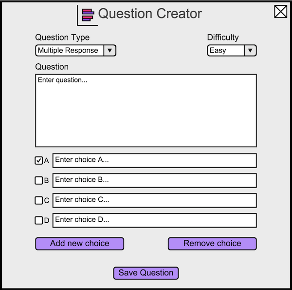
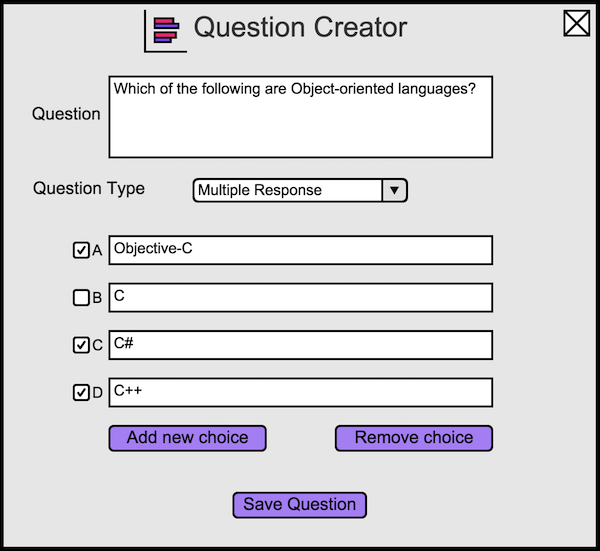

2.4.3. Creating a Multiple Response Question
To create a multiple response question, the user opens the question creator dialog, and then changes the question type to Multiple Response.
The user will see Figure 6.

Figure 6: Default multiple response view.
Nearly all of the features from the multiple choice question type translate to the multiple
response question type. The difference is that the user has the option of choosing multiple answers to be considered correct. To mark an answer
as correct, the user selects the box next to the answer. If the user wants to change a marked box back to being incorrect, the user selects
the box again.
An example of a typical multiple response question is shown in Figure 7.

Figure 7: A question about object-oriented programming languages.
Prev: appt-scheduling
| Next: more-scheduling
| Up: functional
| Top: index